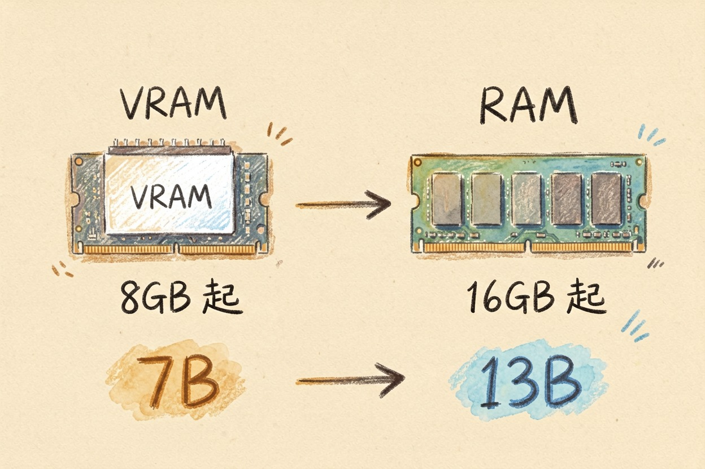
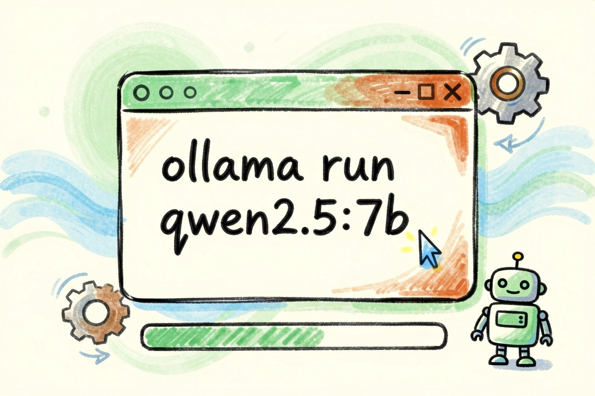

本地部署 AI 模型入门：Ollama 上手
模型装在自己电脑里，隐私留在本机，没网也能用。门槛主要在显存：先看配置再选模型，别一上来就奔着最大的去。
本地部署 AI 模型，先别想「要不要跑 70B 的大模型」，先看自己显卡有多少显存——这才是决定一切的问题。显存够，装个 Ollama，一条命令就能跑起来，数据不出本机。
AI和本地部署模型常被放在一起比，但其实关注点不同。选AI还是本地部署模型，看你手上的活落在哪一边。
本地部署 AI 模型是什么，为什么值得试
所谓本地部署，就是把模型装进自己电脑，而不是打开网页用别人的服务。最大的好处是隐私：数据不出本机，离线也能用，没有按次收费的 token 费。
对不想把聊天记录传出去的人来说，这点很值钱。它也有局限：吃配置，而且能力比旗舰云端模型差一截。适合隐私敏感、需要离线、想省订阅费的人。
AI的优势在一处，本地部署模型的优势在另一处，别混为一谈。
硬件要求：显存和内存是两回事

显存不够，再好的模型也白搭。显存（VRAM）是核心变量，内存是地基。显存不够，模型根本跑不动。
按普遍反馈：7B 模型约需 8GB 显存、16GB 内存起步，跑得动；13B 以上的模型建议 24GB 显存；Mac 用 M 系列芯片体验好。判断方法很简单：先查自己电脑的显存和内存，再选模型，别硬上大模型。具体数值以 Ollama 官网{:target="_blank"}当前说明为准。
十分钟上手：装 Ollama、拉模型、跑起来

真正上手，就是一条命令的事。从 Ollama 官网下载对应系统的安装包，装完打开终端，输入一条命令就能拉模型并运行。比如跑一个 7B 的 Qwen 模型：
ollama run qwen2.5:7b第一次运行会自动下载模型，之后秒开。装好就能用，不联网也不慌。真正离线的体验，只有本地部署给得了。
想换模型，去官网模型库看名字改一下就行。想停掉对话，输入 /bye。想理解为什么本地能跑动 7B 小模型，看模型蒸馏和量化是什么。
让本地模型干活的三种方式
让它干活，有三种方式可选。第一种是终端对话，最简单，适合问答和改写。第二种是装 Open WebUI，图形界面，聊起来更像网页版。
第三种是接入现有工具，比如AI 编程助手对比里的 Cursor，把本地模型设成后端，写完代码不出本机。本地模型接进编程工具后，代码同样不出本机。想深入了解 Cursor 的用法，看Cursor 新手教程。不写代码也想体验 AI 做网页的，看不写代码用 AI 做网页。
边界提醒：哪些事别指望本地小模型
动手之前，先想清楚边界。本地小模型适合总结、翻译、日常问答，别拿它和旗舰大模型比。它也有够不到的地方。写复杂代码、深度推理、需要最新知识的任务，仍用云端。
下载安装只用两个官方渠道：Ollama 官网和 GitHub 官方仓库{:target="_blank"}。任何「官方汉化版」「绿色版」「一键加速包」都是可疑来源。
反向提醒：别硬跑显存放不下的大模型，也别从非官方渠道下载安装包。本地部署 AI 模型，先看显存、再选模型、只信官方，这条路才走得稳。更多工具去AI 工具导航。
本文信息核对于 2026-08-06。AI 产品的价格、免费额度与功能变动频繁，实际以各工具官网当前说明为准。